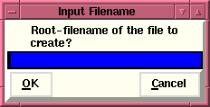

Input Filename Window
Input Filename Window
Creating a file with a
list of Filenames:
When the user is attempting to create a file which will
contain a list of filenames, an "Input Filename"
window appears, which allows the user to enter a
"Root-filename", i.e., a specific suffix will be appended to
the name input. (In the above example case of a file
containing filenames the suffix will be ".fil".)

Once the user inputs a "root filename" the procedure will
complete any necessary steps - in the above case, if the
user has chosen the "Attempt to uncompress
files automatically?" option from the
"Flaunch" window's
"Option"
menubutton the code will attempt to uncompress any
compressed files before writing the uncompressed filenames
to the output file. Upon successfully completing this task
the procedure will return the name of the output file which
was just created to the calling routine. In the above case
of the calling routine being the
"File selection" window the
output file will be returned to the appropriate Entry-box in
the "Parameter Editing
Window". The code will automatically prepend an "at"
[@] sign to the filename returned to the entry-box. Note:
The user will have to examine the comment field to determine
if this designation for a file containing a list of items is
supported for the particular parameter entry-box. If not,
the user will have to remove the "at" sign by hand.
Creating a custom task
list:
When the user has opted to creat a "custom" package which is
to be displayed by "flaunch" it is necessary that this file
have the proper format, and be stored in the proper place
with the proper name. Thus the file created has the name
"custom_task" and resides in the ".flaunch" directory in the
users $HOME directory.
Brian K. Elza
Last modified: Mon Jul 28 14:48:18 EDT